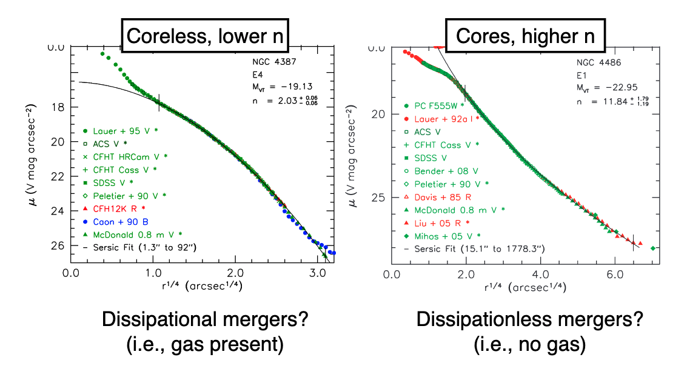

Elliptical Galaxies
Contents
8. Elliptical Galaxies¶
8.1. Brightness Profiles¶
{kind=link}
Sersic profiles are not always the best descriptions of elliptical galaxies – we have two families of ellipticals.
Core
Higher \(n\), have “missing light” near the center. Maybe BBH scouring? Maybe dissipationaless (i.e., no gas) mergers
Core radii scale with black hole sphere of influence / black hole mass
Typically more luminous and more massive
Coreless
Do not have the missing light at small radii. Maybe from dissipational mergers?
8.1.1. Comparing to S0/Spheroidal Galaxies¶
Importantly, spheroidal and S0 galaxies have very properties than true ellipticals
Core ellipticals are much more massive and have higher Sersic \(n\)
S0 bulges are more comparable to coreless ellipticals and fall on the relations.
They are much fainter at the same radii, and have more structure in the surface brightness profiles.
They also follow totally different luminosity functions – ellipticals are much brighter than spheroidal galaxies.
{kind=link}
8.2. The Fundamental Plane¶
8.2.1. Faber-Jackson Relation¶
One of the first empirical laws discovered about elliptical galaxies is the tight correlation between the Luminosity \(L\) and the stellar velocity disperison \(\sigma\): \(L\propto \sigma^{\sim 4}\)
{kind=link}
8.2.2. The Kormendy Relation¶
Another relation is the Kormendy relation – the average surface brightness correlates tightly with the half-light radius.
{kind=link}
8.2.3. The Fundamental Plane¶
It turns out that we can combine the two above relations (which are just projections of a more fundamental thing called the Fundamental Plane of Elliptical Galaxies): a relationship between the surface brightness, velocity dispersion, and effective radius.
Here are some projections of the Fundamental Plane:
{kind=link}
{kind=link}
Elliptical galaxies are a homogeneous population!
Dwarf spheroidals do not fall on these relations.
Globular clusters do not fall on these relations.
{kind=link}
8.2.3.1. Derivation from the Virial Theorem¶
We have the Fundamental Plane as:
and
where \(\mu = -2.5\log_{10}I_e\). We can get these relations close with the virial theorem.
We can re-write the kinetic energy as:
The bulk rotation of the galaxy is slow, but velocity dispersions can be huge! Thus, the impoortant component is the random motion of stars themselves – the velocity dispersion.
Thus:
What about the potential energy? We have:
Putting what we have together, we have:
Let’s write the surface brightness:
This is effectively the average surface brightness within \(r_e\). Continuing on, we have…
We take this last equation and solve for \(r_e\):
Assuming that the mass-to-light ratio is constant, we have:
The real scaling relation is \(r_e \propto \sigma^{1.24} I_e^{-0.82}\).
The majority of the “tilt’’ of the fundamental plane is due to a changing mass-to-light ratio, but we assumed that it was constant! This is a good sign that elliptical galaxies are dispersion supported.
8.3. Stellar Populations in Ellipticals¶
Massive core ellipticals both form their stars earlier and on shorter-time scales than moreless ellipticals!
By the time the Type Ia SN are going off, the elliptical has already used up all its gas and thus cannot continue to Fe enrich the ISM and the stars.
This is why we are alpha enhanced – the Type II all went off and formed stars quickly, without the Fe enriching the ISM.
{kind=link}
{kind=link}
8.4. Evolution over Cosmic Time¶
The quiescent galaxy population grows over time, though in particular, the most massive galaxies were already formed/in place at earlier times. We can see this in the evolution of the galaxy mass function with redshift:
{kind=link}
The much smaller quiescent galaxies “red nuggets” at high redshift are thought to be the cores of modern day ellipticals. Outskirts build up over time by minor mergers.
This is to say that Early Type galaxies were smaller at earlier times. These much smaller galaxies formed the cores of modern day ellipticals, and the outskirts are built up over cosmic time by accretion of smaller galaxies (“minor mergers”).
8.5. Summary of Elliptical Galaxies¶
Elliptical galaxies can be well-described by Sersic profiles.
Elliptical galaxies form a well-defined fundamental plane: the relationship between the effective radius, average surface brightness, and central velocity dispersion.
The fundamental plane is tilted compared to what you derive from the virial theorem.
Primarily due to mass-to-light variations.
The Kormendy and Faber-Jackson relations are projections of the fundamental plane.
Dwarf spheroidal galaxies and globular clusters do not fall on the fundamental plane of elliptical galaxies. They are not a part of the population of early type galaxies.